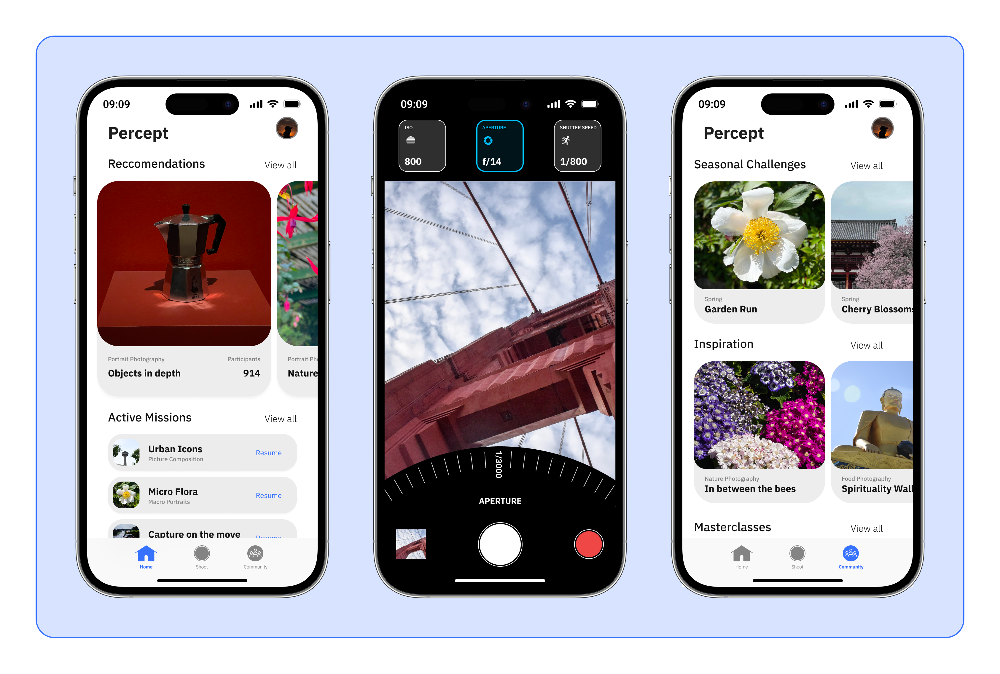
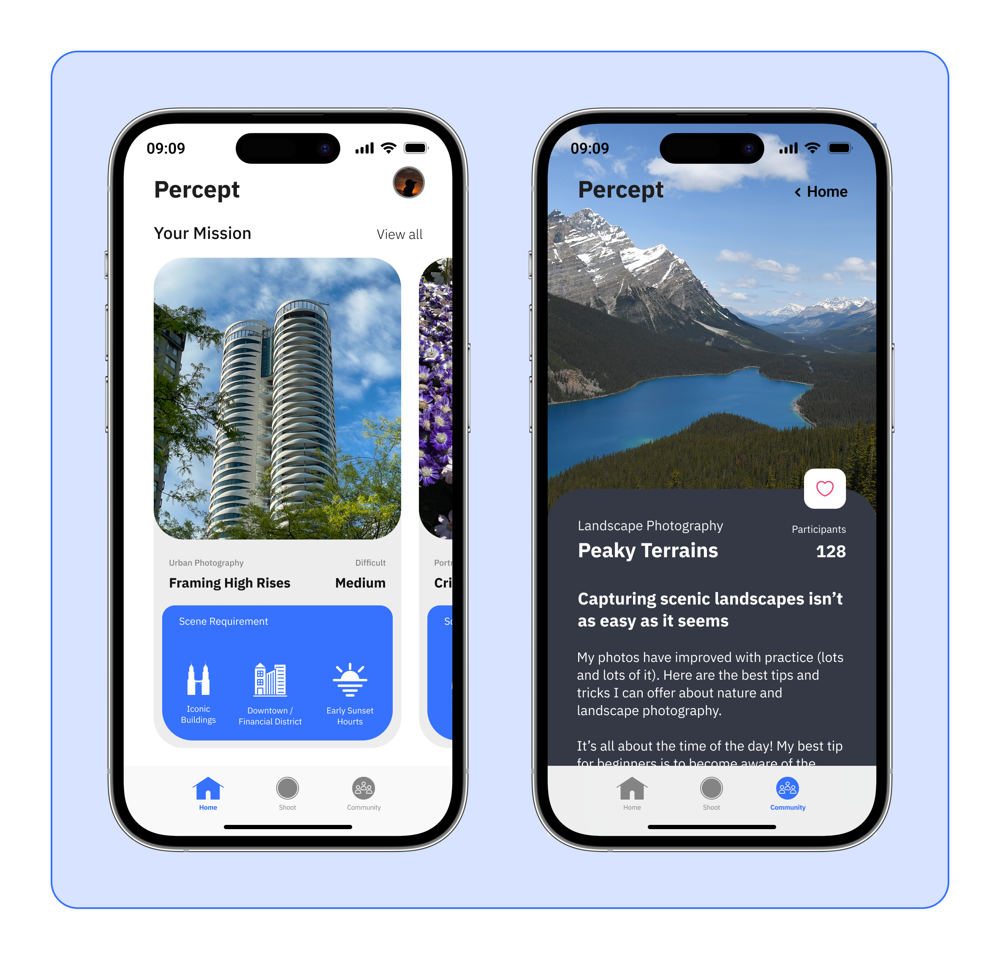
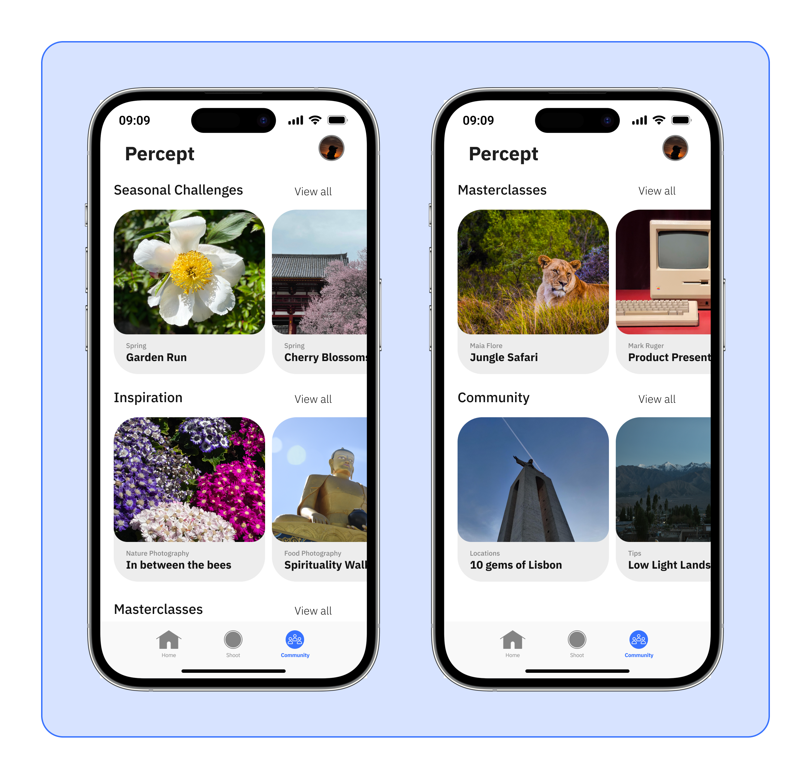
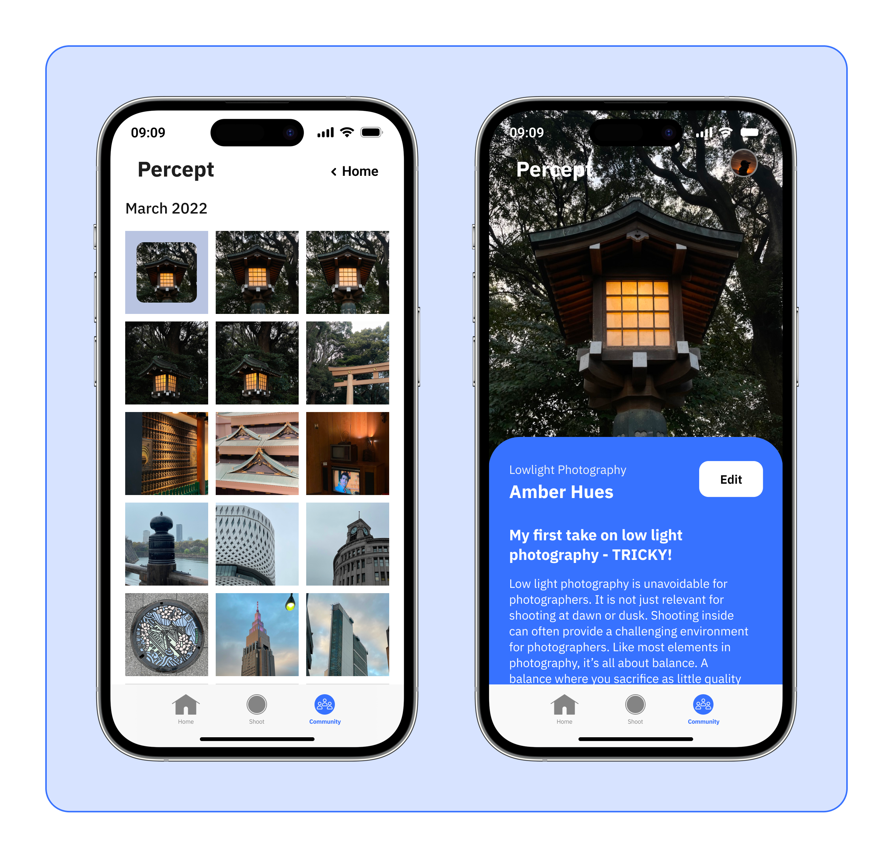

The project began with a question about why people lose their hobbies, and ended with a structural answer about how learning needs to be designed.
My thesis began with the ambition to explore how design could help people reconnect with their passions. Photography became the starting point — a hobby I had practiced for years and deeply understood.
The Problem
Three patterns emerged from early observations:
01
Problem
1 — Passion fades when practice becomes monotonous.
“At first I loved practicing every evening. But after months of repeating the same scales, it started to feel bored. I didn’t stop loving music, I listen to it more often than I play”
02
Problem
2 — Learning platforms overwhelm beginners.
“I saved hundreds of recipes online, but every time I opened them I felt overwhelmed about where to begin. Eventually I just went back to making the same three dishes.”
03
Problem
3 — Passion is fun, but learning isn't always rewarding.
“I watched dozens of tutorials on aperture and ISO, but when I finally went out to shoot, I still didn’t know what to actually look for. It felt like I had learned the settings, but couldn't convert it into results.”

Percept's constraints aren't technical — they're pedagogical. Learning photography requires the real world, and the lesson architecture had to make that transition mandatory.
Learning requires doing — passive content doesn't build muscle memory
Progress in photography is subjective — hard to gamify meaningfully
Lesson context switches: in-app → real world → back in-app
Risk: gamification mechanics undermine the meditative quality of shooting
Users will open this app outdoors — legibility in sunlight
The binding constraint was "learning requires doing." Passive content — tutorials, videos, quizzes — doesn't build the visual pattern-recognition that makes a photographer. This forced a structural decision: every lesson module had to end with a real-world shooting task, not a screen. The app wasn't allowed to be the destination. It had to be the launch pad.

The research is Percept's strongest chapter — three methods that each changed the design direction, not just confirmed it.
Research ran across three methods over six weeks: five semi-structured interviews with people who had started a creative hobby in adulthood, a diary study with three beginner photographers over two weeks, and a competitive analysis of seven learning apps. The central question wasn't "how do people learn?" — it was "why do people stop?"
01
Finding
Hobbies evolves through phases, not a single moment
Design implication:Learning systems should support an evolving journey rather than a fixed curriculum. This insight led to structuring the experience around progressive missions that guide users through stages of exploration and growth.
02
Finding
Motivation depends on visible progress and perspective
Design implication: Progress tracking in Percept couldn't be gamified in a conventional sense — streaks and badges felt hollow against a subjective skill. Instead, progress was expressed as a portfolio: the shots you took, the concepts you applied, the way your eye changed over time.
03
Finding
Beginners know camera settings. They don't know what to look for before pressing the shutter.
Design implication: Teaching technique without context doesn't build vision. Every lesson module needed to bridge the gap between "knowing" and "seeing" — which meant the concept explanation had to end with a framing challenge, not a quiz.

What Actually Worked
✓ Direction 01 — Chosen
Simplifying the learning process
The first structural direction was a traditional course architecture — sequential modules, locked content, a "photography 101" pathway. The research seemed to support it: users wanted structure, and beginners didn’t know what they didn’t know. A guided path felt like the answer.
A guided path with structured modules removed the paralysis of not knowing where to start — the most common reason beginners stall before they've begun.
Direction 02 — Abandoned
Experience Centers
The nature of people is to react to certain instances and events. The idea revolves around experience centers around the city — hubs that introduce people to different passions through random occasions, triggering an inspirational moment that urges them to explore more.
Experience centers depend on physical infrastructure at scale that doesn’t consistently exist. The concept also replaces the personal, on-demand nature of learning with serendipitous exposure — which can’t be reliably designed for or repeated. Users need something they can return to on their own terms.
✓ Direction 03 — Chosen
Network of learners
The aim is to connect people with complementary interests. People are driven by people. The need to tend to the motivational factor can be solved by coming together.
A convenient process of enabling people to meet up for a purpose resonates with the value of passion uniting people — it adds a social layer that sustains motivation beyond individual willpower.

Three structural decisions about how lessons are built, how progress is measured, and how navigation is organised around doing rather than learning.
Options considered
- Streak + points system (gamified)
- Technical accuracy score on submitted shots
- Portfolio-based progress — concepts applied, shots submitted
What we chose
- Portfolio view — submitted shots organised by concept
- Enabled progress that felt personally meaningful, not arbitrary
- Sacrificed the motivational short-loop of points and streaks
Why: A streak rewards consistency with the app, not skill development. The research finding that hobbies evolve through phases meant progress had to look different at week one vs. week twelve. A portfolio shows that evolution in a way a score never could.
Options considered
- Optional challenge at the end of each lesson
- External link to a photography assignment resource
- Mandatory field prompt as the lesson's final step
What we chose
- Mandatory field prompt — lesson incomplete without a submitted shot
- Enabled a genuine learn–shoot–reflect loop
- Sacrificed users who want to learn without committing to going outside
Why: Making the field prompt optional would have let users skip the hardest part — and the most important one. Every person who stopped learning photography described the same gap: they knew the settings, but couldn't apply them. The field prompt closes that gap by making real-world practice non-negotiable.
Options considered
- Course library as the home screen (content-first IA)
- Dashboard showing progress across all modules
- Active lesson as the primary state — everything else secondary
What we chose
- Active lesson as the home state — app opens to where you left off
- Enabled a sense of continuous momentum, not browse-and-pick
- Sacrificed the browsability and sense of content abundance
Why: Most learning apps optimise for discovery — the home screen is a library. But Percept's insight was that beginners don't struggle to find content; they struggle to return to practice. Surfacing the active lesson immediately removes the friction of re-entering. The IA serves momentum, not choice.
A calm, minimal interface designed to be put away — the visual language serves the moment of transition from screen to camera.
You open Percept, and it puts you in a concept — depth of field, the rule of thirds, how to read light. You spend ten minutes with the explanation, then the app hands you a field prompt: "Go outside. Photograph something where the background disappears." You close the app. You take the shot. You come back. The lesson ends when you submit. That loop is Percept.

The first screen a user sees — concept-led, not feature-led. The visual language signals calm and focus before the lesson begins.

The missions view — structured around progressive concepts rather than a content library. Users see where they are, not how much is left.

The field prompt screen — the moment the lesson leaves the app. The copy is directive and physical: go outside, find something, shoot.

The reflection view — submitted shots organised by concept. Progress expressed as a portfolio, not a score.
The proxies below are what you'd track — but the real signal is qualitative: whether users start talking about their shots differently.
65%+
Lesson completion rate including the real-world field prompt — the metric that separates passive learning from active practice.
4+ shots
Average field shots submitted per user in first 30 days — indicates the loop is working, not just the in-app time.
40%+
30-day retention for users who completed 3+ lessons — suggests the habit formation model is taking hold.
Qualitative feedback from the diary study suggested this shift — from technical knowledge to visual intuition — was possible within two weeks of structured practice.
What worked
The research synthesis — particularly the finding that beginners fail not from lack of technique but from inability to predict how a shot will look — was strong enough to anchor every structural decision. The IA and lesson loop that came from that finding held up through the full project.
What I'd change in V2
I'd run 3 sessions with beginner photographers before finalising the lesson structure, because the progression I designed assumes a learning curve I never validated with real users. The field prompt mechanism is structurally sound — but whether 30 minutes is the right lesson length, and whether the in-app content is dense enough to be worth the trip outside, are questions that only real testing can answer.
Percept taught me that the hardest UX problems in learning apps aren't about feature design — they're about what the app asks users to do in the real world. Any learning product that exists purely on a screen is competing with every other passive content source. The ones that require something of the user outside the app are in a different category entirely.